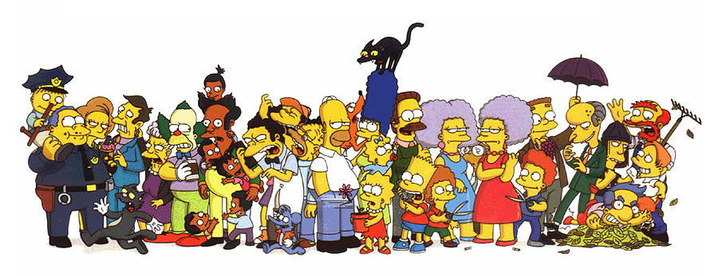

The Simpsons
«Сі́мпсони» (англ. «The Simpsons») — американський анімаційний сатиричний серіал,
створений Меттом Ґрейнінґом для компанії «Fox». Мультсеріал — сатирична пародія на стиль життя середнього класу
США, втілена в сім'ї Сімпсонів, яка складається з Гомера, Мардж, Барта, Ліси та Меґґі. Більшість подій відбуваються
у вигаданому містечку Спрінґфілді (англ. Springfield). Шоу висміює численні аспекти життя людей, американську
культуру, суспільство, навіть американське телебачення.

Головні персонажі
-
Гомер Сімпсон
 Гомер Джей Сімпсон (англ. Homer Jay Simpson) — один із головних героїв
мультсеріалу «Сімпсони». Гомер — милий та кумедний, проте іноді грубий
і неввічливий батько родини. Він має очевидні вади: товстий, лисий і
не дуже розумний. Нерідко він поводиться як блазень, абсурдно, егоїстично
і нетактовно, але все ж лишається симпатичним.
Гомер має трьох дітей: Барта, Лісу і Меґґі. Працює на Спрингфілдській
атомній електростанції інспектором з безпеки. Гомер неохочий до роботи
і багато п'є.
За декілька років він перетворився на культового персонажа у США та багатьох
інших країнах світу, в тому числі й в Україні.
Гомер Джей Сімпсон (англ. Homer Jay Simpson) — один із головних героїв
мультсеріалу «Сімпсони». Гомер — милий та кумедний, проте іноді грубий
і неввічливий батько родини. Він має очевидні вади: товстий, лисий і
не дуже розумний. Нерідко він поводиться як блазень, абсурдно, егоїстично
і нетактовно, але все ж лишається симпатичним.
Гомер має трьох дітей: Барта, Лісу і Меґґі. Працює на Спрингфілдській
атомній електростанції інспектором з безпеки. Гомер неохочий до роботи
і багато п'є.
За декілька років він перетворився на культового персонажа у США та багатьох
інших країнах світу, в тому числі й в Україні.
-
Мардж Сімпсон
 Марджорі (Мардж) Сімпсон (дівоче прізвище — Був'є) (англ. Marjorie "Marge" Simpson, née Bouvier)
— один з головних персонажів анімаційного серіалу Сімпсони, дружина Гомера Сімпсона, мати Ліси
та Барта. Домогосподарка, майже весь свій час проводить удома доглядаючи наймолодшу дитину Меґґі,
а також Барта, Лісу і чоловіка. Найвідоміша особливість героїні — блакитне волосся зібране у високу
зачіску — «вулик». Мардж названо на честь матері творця серіалу Мета Ґрейнінґа Марґарет (Мардж) Ґрейнінґ.
Марджорі (Мардж) Сімпсон (дівоче прізвище — Був'є) (англ. Marjorie "Marge" Simpson, née Bouvier)
— один з головних персонажів анімаційного серіалу Сімпсони, дружина Гомера Сімпсона, мати Ліси
та Барта. Домогосподарка, майже весь свій час проводить удома доглядаючи наймолодшу дитину Меґґі,
а також Барта, Лісу і чоловіка. Найвідоміша особливість героїні — блакитне волосся зібране у високу
зачіску — «вулик». Мардж названо на честь матері творця серіалу Мета Ґрейнінґа Марґарет (Мардж) Ґрейнінґ.
-
Барт Сімпсон
 Бартолом'ю ДжоДжо «Барт» Сімпсон (англ. Bartholomew JoJo «Bart» Simpson) — один із головних героїв
мультиплікаційного серіалу Сімпсони. Барт — найстарша дитина Гомера і Мардж Сімпсон. У нього також
є дві молодші сестри — Ліса і Меґґі. Барт є втіленням образу бешкетника та посереднього учня у школі.
Разом зі своїм батьком Барт є одним із найвідоміших персонажів у цьому серіалі.
Бартолом'ю ДжоДжо «Барт» Сімпсон (англ. Bartholomew JoJo «Bart» Simpson) — один із головних героїв
мультиплікаційного серіалу Сімпсони. Барт — найстарша дитина Гомера і Мардж Сімпсон. У нього також
є дві молодші сестри — Ліса і Меґґі. Барт є втіленням образу бешкетника та посереднього учня у школі.
Разом зі своїм батьком Барт є одним із найвідоміших персонажів у цьому серіалі.